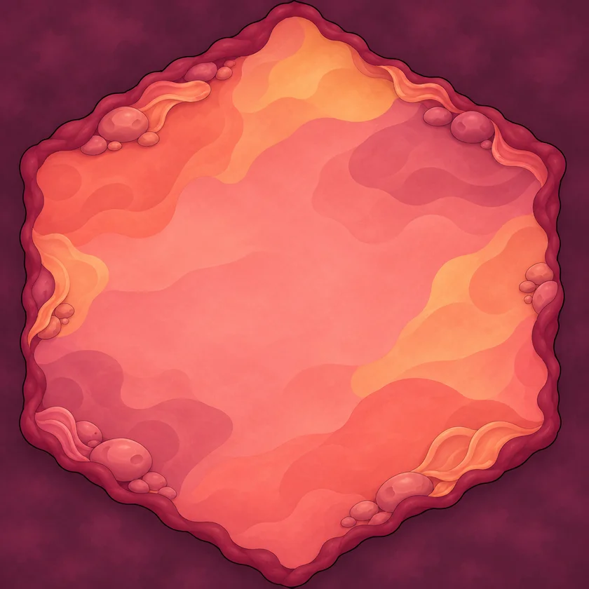
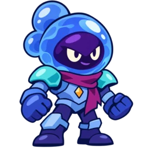

Arena do lóbulo
Linfócito T CD8+
Escolha uma arma, monte sua combinação e derrote três chefes.
Arraste o dedo ou use as setas para mover. Você ataca automaticamente. Colete fragmentos para escolher habilidades.
Arma inicial
Fusões descobertas
Comum e Rara aparecem ao subir de nível. As raras saem menos nas ofertas aleatórias.
Especial aparece após um chefe. Complete uma receita para concorrer à fusão ou leve sua arma ao nível 2 para evoluí-la.
Entender a arena
Você é um linfócito T CD8+. Aproxime-se dos hepatócitos roxos para eliminar a infecção. Cada célula eliminada contribui para a cicatriz. O Foco viral se recupera enquanto restarem células infectadas.
No mapa, os seis espaços porta ficam nas bordas. O sangue corre pelos canais até a veia central.
Subiu de nível
Pausado
Sua combinação nesta partida
Sua combinação
Perguntas desta partida